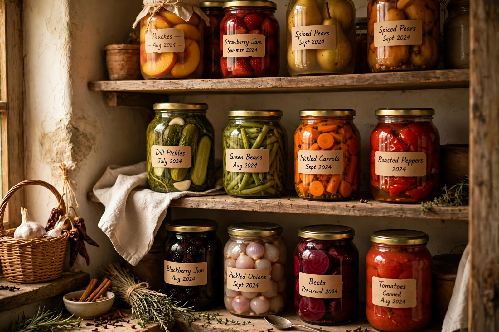

Food preservation
From Wikipedia, the free encyclopedia

Food preservation includes processes that make food resist spoilage by microorganisms and slow the oxidation that degrades flavour and nutrients, so that food can be stored safely for far longer than in its raw state. The main families of techniques are: inhibiting microbial growth (by cold, drying, acidity, salt, sugar or alcohol), killing microorganisms (by heat, as in canning and pasteurisation), and preventing recontamination (packaging). Preservation underlies food trade, winter survival in cold climates, exploration, military supply and modern food security.
Traditional methods
Drying is the oldest technique, applied to grains, fruit, fish and meat. Salting and curing draw out moisture and inhibit bacteria; smoking adds antimicrobial compounds and flavour; fermentation uses beneficial microbes and their acids or alcohol to outcompete spoilage organisms, yielding cheese, yoghurt, wine, beer and pickles. Pickling in vinegar, jam-making with sugar, and storage in oil or fat (confit) are all traditional hurdles to spoilage, as are cold storage in cellars, ice houses and — after the 19th century — refrigeration and freezing.
Industrial methods
Nicolas Appert's heat-processing of sealed bottles (published 1810, for a French government prize) led to canning in metal containers, developed in Britain and America in the 19th century. Pasteurisation (gentle heating, devised by Louis Pasteur for wine and beer, later applied to milk) kills pathogens without cooking the food. The 20th century added freeze-drying, irradiation, high-pressure processing, aseptic packaging and modified-atmosphere packaging, each extending shelf life while attempting to preserve fresh character.
History
Preservation shaped cuisines: salt cod enabled transatlantic fishing fleets, cured hams and hard cheeses stored summer abundance for winter, and canned rations fed armies and expeditions — sometimes dangerously, as early cans sealed with lead solder may have contributed to the fate of the Franklin expedition. Modern cold chains now move fresh food worldwide, but preserved foods remain dietary staples everywhere.